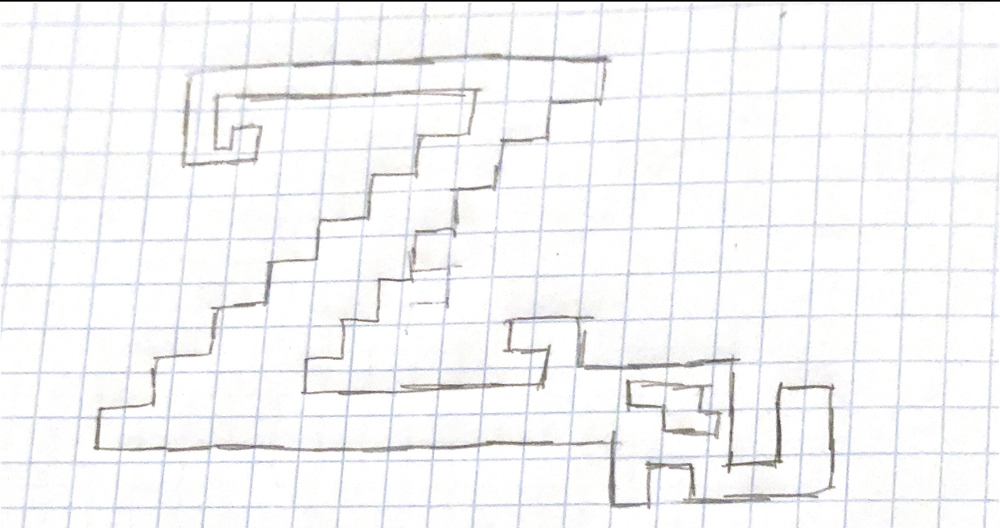
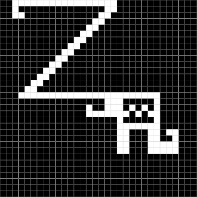

lab 1
lab 2
lab 3
lab 4
lab 5
lab 6
lab 7
lab 8
lab 9
lab 10
lab 11
lab 12
lab 13
lab 14
lab 15
lab 16
lab 17
lab 18
lab 19
lab 20
lab 1
lab 2
lab 3
lab 4
lab 5
lab 6
lab 7
lab 8
lab 9
lab 10
lab 11
lab 12
lab 13
lab 14
lab 15
lab 16
lab 17
lab 18
lab 19
lab 20
HOME
Thomas A. Edison High School
Web Design
10th Grade
Lab 6 Favicon, banner, and branding
October 15th, 2021
Zainab Majidi
- What exactly is a favicon?
A favicon is a file that consists of one or more small symbols that are connected with a specific web page.
- How are favicons created?
One of it's other common names that it is reffered to as is a shortcut icon. To create a favicon for your website, first you need to find an image that you like or you would like to represent you. Then, find the colors you would like it to such as mine which includes yellow and purple. After, you find the number that these colors belong to and utilize them to make the shape/thing of your preference.This was done on code.org
- How did I create the favicon for this site?
I created the favicon for this specific site by pluging it into the html code given which allowed to be presented to users who visit the cite.
- What does your icon looks like, in binary and/or hexadecimal?
My logo in appearance looks the same, however, the code used to make the shape changed. It when from binary which just consisted of 0s and 1s being placed to make new colors. However, in Hexadecimal, the numbers include 2 and 4 as well letters which was interesting.
- Colored Logo
- Logo Sketch

- Black and White Logo
